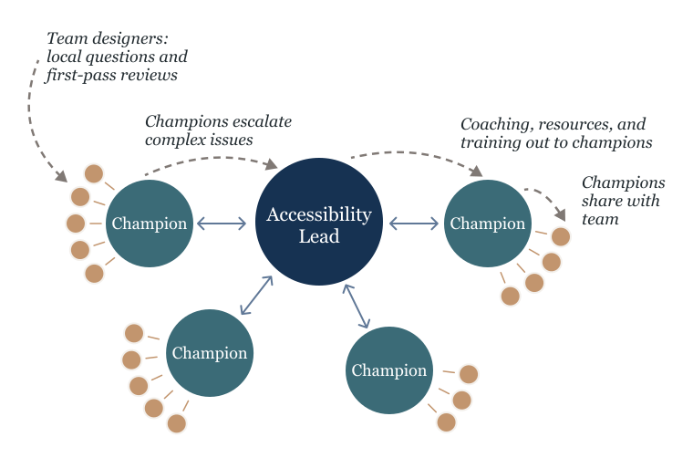

Walmart · 2024–2026
Accessibility Champions and Training
I built a defect-driven training program and a peer champion network so accessibility expertise could live inside every design team, not just in one specialist role.
Answering Every Question Myself Made Me the Bottleneck
When I became the accessibility-focused designer for the organization, the same issues surfaced review after review: low color contrast, inconsistent component use, accessibility considered too late. I was the primary resource, so every question routed to me.
Answering them one at a time would never scale, and it made the whole organization depend on a single specialist. The durable fix was not a bigger queue into me. It was local expertise on every team. I built the program around a hub-and-spoke model: coach interested designers into accessibility champions, embed them on their own teams, and keep a clear path back to me for the hard cases.

Two Years of Training, Built to Spread
- 6 grew to 8
- Sessions, 2024 to 2025
- 5
- Recurring defects targeted
- 2 grew to 5
- Named peer champions, original team to expansion
- 16
- Designers trained
Training Built From Real Defects, Not a Generic Curriculum
I did not teach the standards top to bottom. I analyzed our recurring defects and review findings, then built the sessions around the five issues that showed up most: color contrast, labels and alt text, unique button labels, headings and hierarchy, and page titles. A small, concrete set designers could grasp and apply the same week.
The examples came from designers' own products, not abstract demos. Sessions paired live instruction with hands-on Figma annotation work, which the designers had asked for directly, plus job aids and reference documentation. Session feedback and topic requests shaped what I taught next, so the curriculum tracked the real failure patterns instead of a fixed syllabus.
The goal was behavior change, not attendance.
Champions Amplified the System Instead of Absorbing It
The champions were designers who showed interest and aptitude. Some volunteered, some I recruited after they proved strong at the work, especially annotation. I coached them directly and gave them extra resources and time.
I designed their role deliberately narrow. Champions handled local questions, gave first-pass reviews, and reinforced expectations on their own teams. They were never a second support lane meant to absorb expert-level work. The escalation path ran from self-review, to champion input, to my review, with leadership alignment when a call needed it, so complex issues always had somewhere to go.
A Champion Caught Ten Issues I Never Saw
One of my champions, Bryanna, was relatively new to accessibility when she started. After she changed teams, she landed on a group that had run a single accessibility audit but never taken the findings back through design.
On her own, she identified roughly ten valid accessibility issues in the team's work and brought them to me as well-founded concerns, with more she already knew how to fix herself. The team addressed them. The escalation path worked exactly as designed: she did the detection, I only had to confirm it, and the team did the fixing.
The measure of success was never how many questions I could answer. It was how many I no longer needed to.
The Expansion Was Designed and Sponsored Before My Involvement Ended
After a reorganization moved me to a larger design organization of more than 70 designers across five directors, I designed the program's next stage: a full-day accessibility training retreat that doubled as culture-building for the newly merged team, followed by an ongoing monthly cadence to layer in harder topics over time. The group director sponsored it and encouraged bringing every designer together.
The retreat was planned and sponsored, but it did not run before my involvement ended. I count it as designed and endorsed, not delivered. What I can point to as delivered is the two-year program for the original team of 16.
What Changed, and How I’d Measure It
Across 2024 and 2025, I delivered an eight-session program for a team of 16, focused on five recurring accessibility defects. I also defined the champion role and gave it to two designers on that team, so they could serve as local first points of contact while complex questions still had a clear path back to me.
The most meaningful outcome was a shift in where first-pass expertise lived. Bryanna’s story captures it: after changing teams, she independently identified roughly ten valid accessibility issues, brought them to me for confirmation, and already knew how to fix more herself. That was the behavior I was designing for: people who could spot and act on accessibility problems before every question reached the specialist.
The program created a repeatable training rhythm and gave the original team a local starting point for accessibility questions. When the organization expanded to 70 designers, the named peer champion group grew from two to five. I met with the three new champions once before my involvement ended, so that next phase remained a starting point rather than a delivered expansion.
If I were setting the measurement plan today, I’d establish a baseline for recurring defects, track progress by team, and measure how often champions helped resolve issues before escalation.